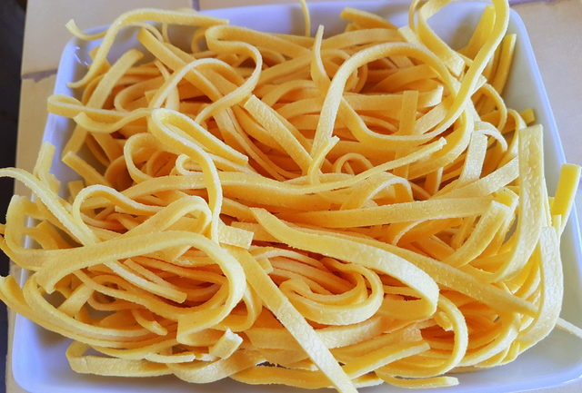
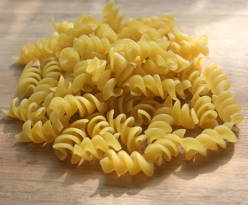
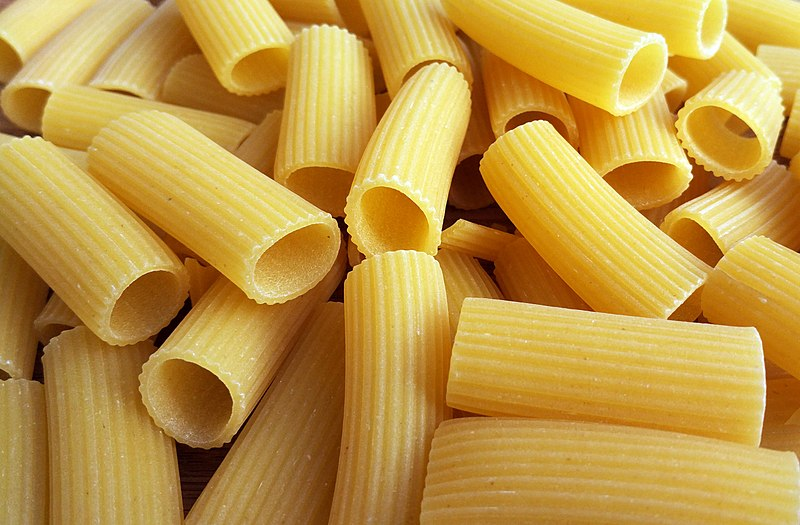
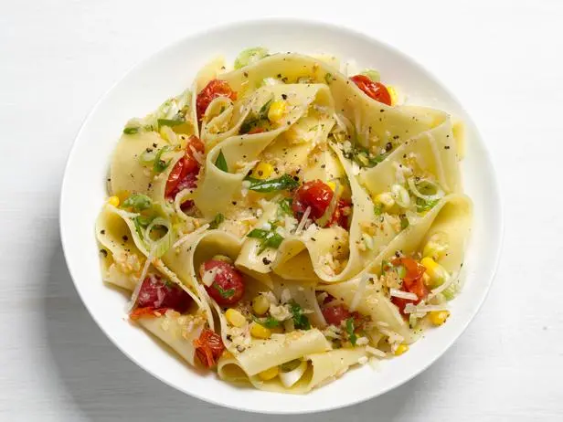

Fettuccine
Fettuccine is a type of pasta that is long, flat, and ribbon-shaped. It's a key ingredient in many Italian dishes, including fettuccine alfredo and fettuccine carbonara.
Spaghetti

Spaghetti is a type of pasta characterized by its long, thin, cylindrical shape, derived from the Italian word "spaghetto" meaning "little string" or "twine".
Rotini
Rotini pasta is a short, corkscrew-shaped pasta, meaning "twists" or "small wheels" in Italian, known for its ability to hold sauces well due to its spiral shape.
Rigatoni
Rigatoni is a short, wide, tubular pasta shape with ridges on the outside, making it excellent for holding sauces and larger ingredients, and is a popular choice in central and southern Italian cuisine.
Papperdelle
Pappardelle are large, very broad, flat pasta, similar to wide fettuccine, originating from the Tuscany region of Italy. The fresh types are two to three centimetres wide and may have fluted edges, while dried egg pappardelle have straight sides.